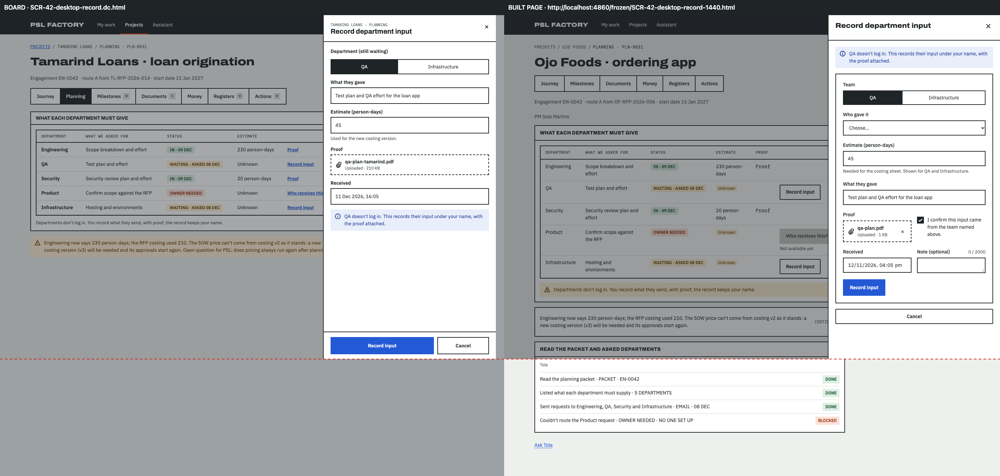
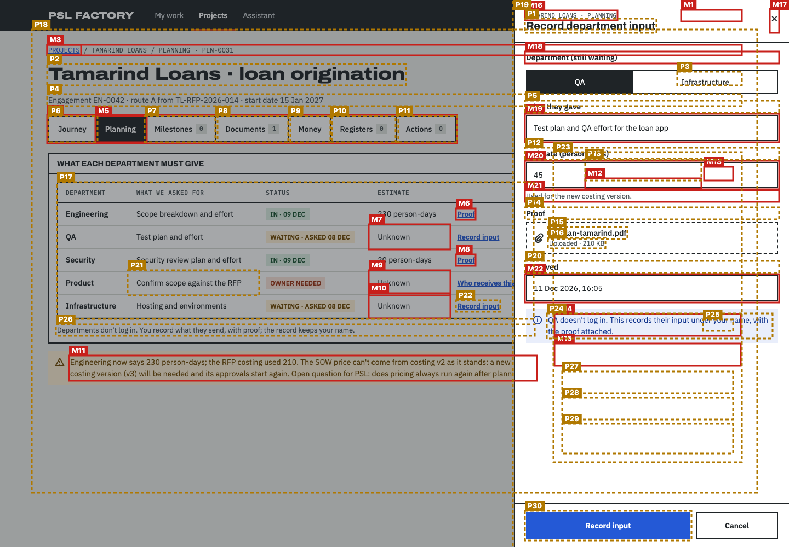
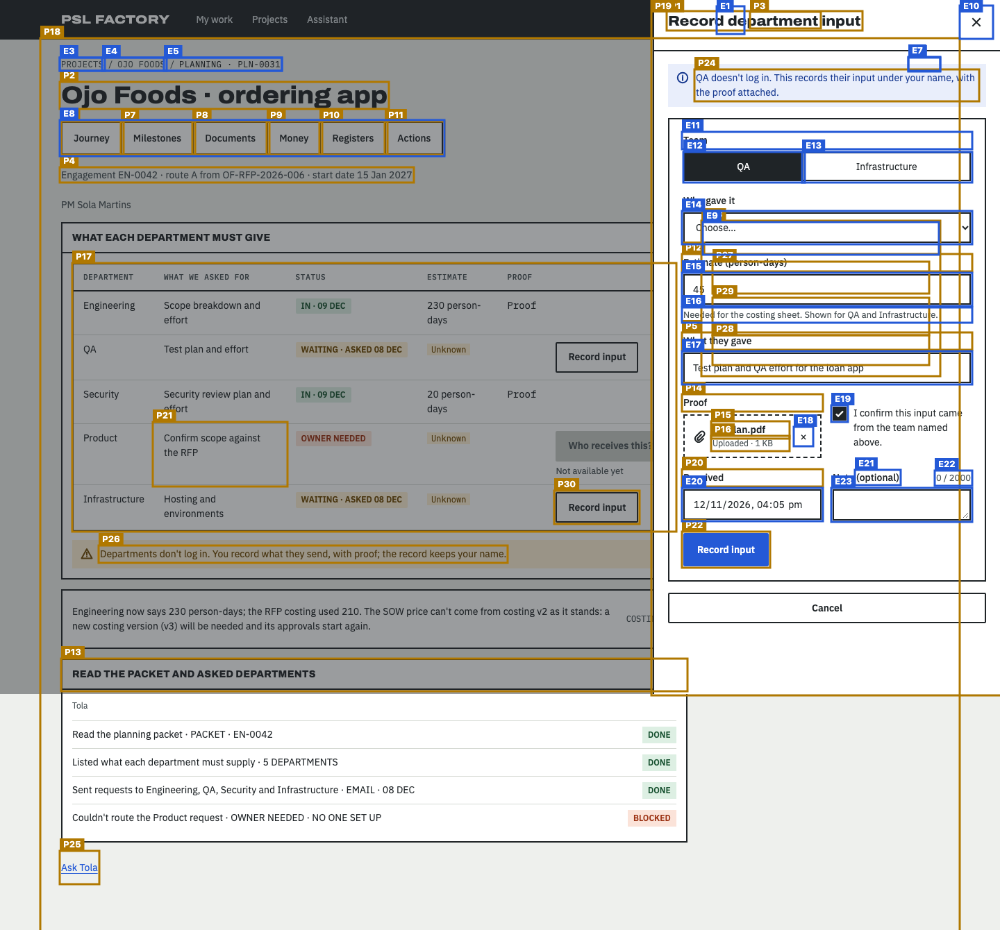
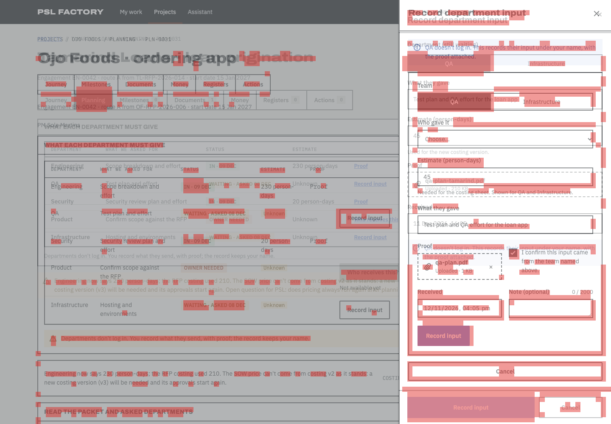

Does the built page follow the design?
Board SCR-42-desktop-record.dc.html compared with http://localhost:4860/frozen/SCR-42-desktop-record-1440.html at 1440px wide · 2026-11-18T01:04:41.132Z
- Every board item is on the page or approved as an exception (100%).
- Visual match 84.3 is below 90.
- 30 item(s) are in a different place; review them (not part of the pass rule unless --strict-position).
52 of 74 things drawn on the board were found on the page: headings, buttons, links, search and filter controls, table columns, labels and the repeated rows (counted once, not per row).
How closely the shapes line up: blocks, bars, tables and text areas, compared in 12px squares over the top 1000px. Different words in the same place still count as a match, so sample data does not lower the score.
Missing from the built page 22
Drawn on the board but not found on the page. Each one must be built, or approved as an exception.
| # | What | Text on the board | Where on the board | Exception |
|---|---|---|---|---|
| M1 | Text | Tunde Bello · PMO | right, 20px down | approved Conflicts 15: the shell shows the signed-in persona's name (Tunde Bello · PM). · builder proposal, pending design engineer |
| M2 | Text | PROJECTS / TAMARIND LOANS / PLANNING · PLN-0031 | middle, 84px down | approved Conflicts 10: the frame draws the crumbs from context.crumbs as a plain list; the words are the backend's (Ojo Foods for Tamarind Loans, Conflicts 1/15). · builder proposal, pending design engineer |
| M3 | Link | PROJECTS | left, 84px down | approved Conflicts 10: crumbs are plain text in the frame. · builder proposal, pending design engineer |
| M4 | Tabs | Project | left, 212px down | approved Conflicts 8: the project bar is a navigation of links, not a tablist, with no counts and none current. · builder proposal, pending design engineer |
| M5 | Tab | Planning | left, 214px down | approved Conflicts 8: Planning is not a project tab (G-42-7); the item is reached from the project's line row. · builder proposal, pending design engineer |
| M6 | Link | Proof | middle, 383px down | approved Conflicts 13: the proof cite is the backend's evidence cite, drawn as plain text because an evidence id has no app page. · builder proposal, pending design engineer |
| M7 | Text | Unknown | middle, 412px down | approved Conflicts 13: an estimate the response does not give reads Unknown through the shared Unknown value (a chip), never blank. · builder proposal, pending design engineer |
| M8 | Link | Proof | middle, 467px down | approved Conflicts 13: the proof cite is the backend's evidence cite, drawn as plain text because an evidence id has no app page. · builder proposal, pending design engineer |
| M9 | Text | Unknown | middle, 496px down | approved Conflicts 13: an estimate the response does not give reads Unknown through the shared Unknown value (a chip), never blank. · builder proposal, pending design engineer |
| M10 | Text | Unknown | middle, 538px down | approved Conflicts 13: an estimate the response does not give reads Unknown through the shared Unknown value (a chip), never blank. · builder proposal, pending design engineer |
| M11 | Text | Engineering now says 230 person-days; the RFP costing used 210. The SOW price can't come from costing v2 as it stands: a new costing version (v3) will be needed and its approvals start again. Open que | middle, 652px down | approved Conflicts 6: the finding is drawn as returned; the designer's note to PSL is not (G-42-5). · builder proposal, pending design engineer |
| M12 | Text | Tola · PMO agent · done | right, 328px down | approved Conflicts 11: Tola's checklist is the shared workspace checklist (title, 'Tola', rows), not the CMP-09 card. · builder proposal, pending design engineer |
| M13 | Text | DONE | right, 307px down | approved Conflicts 11: no DONE tag on the checklist card; each row carries its own Done word. · builder proposal, pending design engineer |
| M14 | Text | Finished 08 Dec 11:20 Ask Tola | right, 576px down | approved Conflicts 11: no 'Finished' line; 'Ask Tola' is a workspace link drawn only when returned. · builder proposal, pending design engineer |
| M15 | Text | READINESS | right, 630px down | approved D-112: the shared side-panel heading ('Decide') stands in until the backend sends a panel title. · builder proposal, pending design engineer |
| M16 | Text | TAMARIND LOANS · PLANNING | right, 21px down | approved Conflicts 4: the Drawer title is the task's title; no eyebrow is returned. · builder proposal, pending design engineer |
| M17 | Text | × | right, 18px down | approved Conflicts 4: the shared Drawer's Close is an icon button named Close. · builder proposal, pending design engineer |
| M18 | Text | Department (still waiting) | right, 96px down | approved Conflicts 14: F-18's own word 'Team' stays in the shared form. · builder proposal, pending design engineer |
| M19 | Text | Test plan and QA effort for the loan app | right, 210px down | approved Conflicts 4/14: the typed value is the value of F-18's field, not a text node. · builder proposal, pending design engineer |
| M20 | Text | 45 | right, 296px down | approved Conflicts 4/14: the typed estimate is the value of F-18's number field. · builder proposal, pending design engineer |
| M21 | Text | Used for the new costing version. | right, 350px down | approved Conflicts 14: F-18's own help ('Needed for the costing sheet.') stays in the shared form. · builder proposal, pending design engineer |
| M22 | Text | 11 Dec 2026, 16:05 | right, 503px down | approved Conflicts 4/14: F-18's Received field is a native date-time input. · builder proposal, pending design engineer |
In a different place 30
Found on both, but in a different order, side of the page, or area (for example inside the table frame instead of above it).
| # | What | How it moved |
|---|---|---|
| P1 | Text Record department input |
|
| P2 | Heading Tamarind Loans · loan origination |
|
| P3 | Text PM TUNDE BELLO |
|
| P4 | Text Engagement EN-0042 · route A from TL-RFP-2026-014 · start date 15 Jan 2027 |
|
| P5 | Text What they gave |
|
| P6 | Tab Journey |
|
| P7 | Tab Milestones 0 |
|
| P8 | Tab Documents 1 |
|
| P9 | Tab Money |
|
| P10 | Tab Registers 0 |
|
| P11 | Tab Actions 0 |
|
| P12 | Text Estimate (person-days) |
|
| P13 | Text Read the packet and asked departments |
|
| P14 | Text Proof |
|
| P15 | Text qa-plan-tamarind.pdf |
|
| P16 | Text Uploaded · 210 KB |
|
| P17 | Table |
|
| P18 | Main area |
|
| P19 | dialog Record department input |
|
| P20 | Text Received |
|
| P21 | Text Confirm scope against the RFP |
|
| P22 | Link Record input |
|
| P23 | Side panel |
|
| P24 | Text QA doesn't log in. This records their input under your name, with the proof attached. |
|
| P25 | Link Ask Tola |
|
| P26 | Text Departments don't log in. You record what they send, with proof; the record keeps your name. |
|
| P27 | Text Tola prepares the readiness summary once every department has answered. |
|
| P28 | Text Waiting on QA and Infrastructure. Product has no owner yet. |
|
| P29 | Link Prepare readiness |
|
| P30 | Link Record input |
|
Looks different 24
Found on both, but styled differently: table rows and cells, fonts, colours, underlines, outlines, corners. Not part of the score; check each one against the board.
| What | Difference |
|---|---|
| Link "Projects" |
|
| Link "Start work" |
|
| Link "More ways to start" |
|
| Heading "Tamarind Loans · loan origination" |
|
| Text "PLANNING · 2 OF 5 IN" |
|
| Text "PM TUNDE BELLO" |
|
| Tab "Journey" |
|
| Tab "Milestones 0" |
|
| Tab "Documents 1" |
|
| Tab "Money" |
|
| Tab "Registers 0" |
|
| Tab "Actions 0" |
|
| Text "WHAT EACH DEPARTMENT MUST GIVE" |
|
| Link "Record input" |
|
| Link "Who receives this?" |
|
| Link "Record input" |
|
| Text "Departments don't log in. You record what they send, with proof; the record keeps your name." |
|
| Text "Read the packet and asked departments" |
|
| Link "Ask Tola" |
|
| Text "Waiting on QA and Infrastructure. Product has no owner yet." |
|
| Link "Prepare readiness" |
|
| Text "Record department input" |
|
| Link "Record input" |
|
| Link "Cancel" |
|
On the page but not on the board 23
Built but not drawn. Some are expected (data, status lines); the rest need the design engineer to approve or remove them.
| # | What | Text on the page | Where on the page |
|---|---|---|---|
| E1 | Button | Alerts, 1 unread | right, 11px down |
| E2 | Navigation area | Where this sits | left, 85px down |
| E3 | Text | PROJECTS | left, 85px down |
| E4 | Text | OJO FOODS | left, 85px down |
| E5 | Text | PLANNING · PLN-0031 | left, 85px down |
| E6 | Navigation area | Work item | right, 85px down |
| E7 | Link | History | right, 84px down |
| E8 | Navigation area | Project | left, 175px down |
| E9 | Heading | DECIDE | right, 322px down |
| E10 | Button | Close | right, 10px down |
| E11 | Text | Team | right, 192px down |
| E12 | Option | QA, missing | right, 221px down |
| E13 | Option | Infrastructure, missing | right, 221px down |
| E14 | Drop-down | Who gave it | right, 306px down |
| E15 | spinbutton | Estimate (person-days) | right, 395px down |
| E16 | Text | Needed for the costing sheet. Shown for QA and Infrastructure. | right, 445px down |
| E17 | Text field | What they gave | right, 508px down |
| E18 | Button | Remove qa-plan.pdf | right, 617px down |
| E19 | Checkbox | I confirm this input came from the team named above. | right, 586px down |
| E20 | Text field | Received | right, 705px down |
| E21 | Text | (optional) | right, 679px down |
| E22 | Text | 0 / 2000 | right, 680px down |
| E23 | Text field | Note (optional) | right, 705px down |
Pictures
The red dashed line on the side-by-side marks how far down the visual score looks. On the marked board, red boxes are missing items (M). On the marked page, amber boxes moved (P) and blue boxes are extra (E). In the difference picture both screens are laid over each other and red squares are where the shapes do not line up.






Notes about this run
- Images: /_blob/ images are served from /Users/Hunchoo/psl-factory/design/mascots/canvas-assets.json (19 mapped).
Found on both (52)
| Navigation area | Main | |
| Text | PSL FACTORY | |
| Link | My work | |
| Link | Projects | |
| Link | Assistant | |
| Link | Start work | |
| Link | More ways to start | |
| Main area | ||
| Heading | Tamarind Loans · loan origination | page: Ojo Foods · ordering app |
| Text | PLANNING · 2 OF 5 IN | |
| Text | PM TUNDE BELLO | page: Tunde Bello · PM |
| Text | Engagement EN-0042 · route A from TL-RFP-2026-014 · start date 15 Jan 2027 | page: Engagement EN-0042 · route A from OF-RFP-2026-006 · start date 15 Jan 2027 |
| Tab | Journey | |
| Tab | Milestones 0 | page: Milestones |
| Tab | Documents 1 | page: Documents |
| Tab | Money | |
| Tab | Registers 0 | page: Registers |
| Tab | Actions 0 | page: Actions |
| Text | WHAT EACH DEPARTMENT MUST GIVE | |
| Table | ||
| Table column | DEPARTMENT | |
| Table column | WHAT WE ASKED FOR | |
| Table column | STATUS | |
| Table column | ESTIMATE | |
| Text | Scope breakdown and effort | |
| Text | 230 person-days | |
| Text | Test plan and effort | |
| Link | Record input | |
| Text | Security review plan and effort | |
| Text | 20 person-days | |
| Text | Confirm scope against the RFP | |
| Link | Who receives this? | |
| Text | Hosting and environments | |
| Link | Record input | |
| Text | Departments don't log in. You record what they send, with proof; the record keeps your name. | |
| Side panel | page: Review and decide | |
| Text | Read the packet and asked departments | page: READ THE PACKET AND ASKED DEPARTMENTS |
| Link | Ask Tola | |
| Text | Tola prepares the readiness summary once every department has answered. | |
| Text | Waiting on QA and Infrastructure. Product has no owner yet. | |
| Link | Prepare readiness | |
| dialog | Record department input | |
| Text | Record department input | |
| Text | What they gave | |
| Text | Estimate (person-days) | |
| Text | Proof | |
| Text | qa-plan-tamarind.pdf | page: qa-plan.pdf |
| Text | Uploaded · 210 KB | page: Uploaded · 1 KB |
| Text | Received | |
| Text | QA doesn't log in. This records their input under your name, with the proof attached. | |
| Link | Record input | |
| Link | Cancel |
How the scores are worked out
Element coverage. The board is drawn locally from its own template and sample data. From the drawn board the check lists everything a person sees or uses: page areas (navigation, main, search), headings, links, buttons, form fields with their labels, table column headers, filter, search and pagination controls and fixed labels. Rows drawn from sample data count once, as a pattern ("table rows with these columns"). Each item is looked for on the page by its kind and its words (ignoring capitals, curly quotes and small wording differences, at least 80% similar). Coverage is found ÷ drawn. Order is compared in reading order (top to bottom, left to right); an item is "moved" when it breaks the order, sits on the other side of the page, or sits inside a different area.
Visual match. Both full-page screenshots are compared in 12px squares after a light blur, over the board's height (1000px; the page is 1340px). Only squares with something in them count. A square matches when its colours line up, or when both have text or lines there. Score = matching ÷ counted squares (8496 of 10080). Over every square including empty background it would be 84.3.
Technical details
Board file: /Users/Hunchoo/psl-factory/design/canvas/project/SCR-42-desktop-record.dc.html
Viewport: 1440×1000
Report data: report.json
Exceptions file: /Users/Hunchoo/psl-factory/delivery/features/F-31/fidelity-exceptions.json